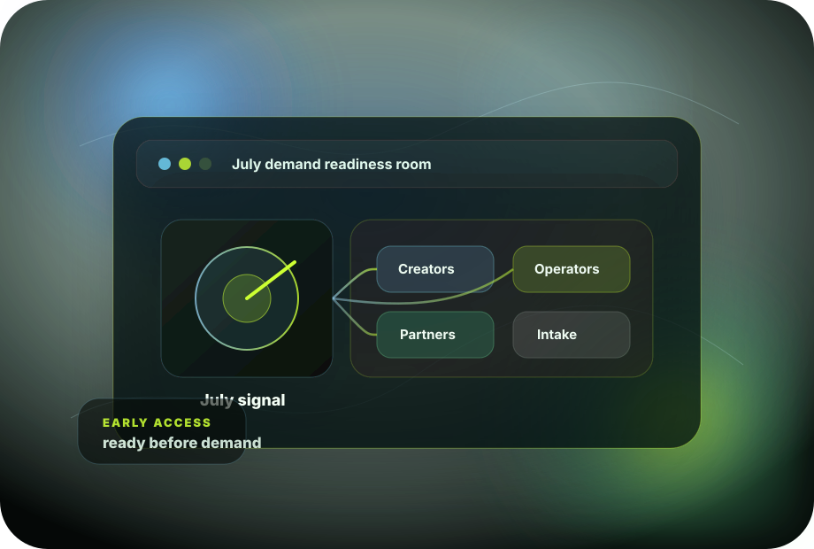

01
July-window positioning
Clarify what the July decision could mean for your audience before the news cycle gets crowded.
July decision window • early access open
Hyzer helps hemp and cannabis operators, creators, and partners prepare for a July demand shift with stronger public messaging, early-access intake, and cleaner partner coordination.

What Hyzer is
The July decision may pull new attention into hemp and cannabis. Hyzer helps serious teams prepare the page, the message, and the intake path before that attention arrives.
Clarify what the July decision could mean for your audience before the news cycle gets crowded.
Give trusted creators a clean story, audience-safe talking points, and a path to route real interest.
Identify serious operators who are preparing public messaging, partner coordination, and intake before demand picks up.
Publish a clear story without making claims the team cannot support.
Keep the launch checklist simple: audience, message, intake, partner roles, and follow-up.
You do not need to predict the outcome to prepare your audience and intake path.
The thesis
Hyzer is built for the teams that do not want to improvise during the July news cycle. The page, the creator angle, the partner list, and the intake flow should already be live before urgency peaks.
Creator partner track
The first wave needs education-led creators who can explain the July decision window, qualify audience intent, and send serious interest to the right intake path.
Operator pilot track
Hyzer helps early operators organize positioning, partner messaging, launch assets, and early-access intake around the moment.
Why now
Anyone can react after the news. The serious teams will already know what they are saying, who they are speaking to, and where interested people should go next.
Line up creators, draft the public story, qualify operators, and collect early-access interest.
Explain what changed, who it matters for, and where serious people go next.
Route interest into the right track, pilot, or partner conversation.
Early access
Hyzer is opening early access for trusted creators, serious operators, and partner teams that want the public story to be clean before demand picks up.